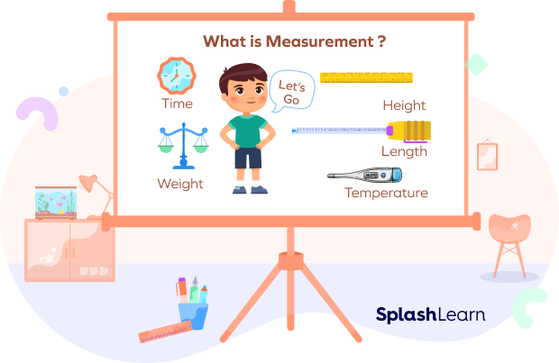
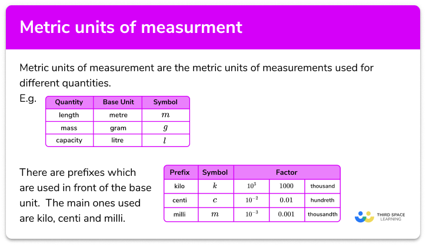

The units of measurement are the units that are used to represent physical quantities like length, mass, temperature, current, area, volume, intensity, etc. We use different measurement units to represent the magnitude of the physical quantities including the traditional units, the Metric System of units, the imperial system of units, and US customary units. Units of measurement have also evolved and played a crucial role from the early ages till the present. We use the measuring units to compare how large or small a physical quantity is as compared to the basic standard quantity.
Measurement is a system to measure the height, weight, capacity or even amount of certain objects. We can measure how long things are or how tall or how far two things are. For example: The height of Oliver is 100 inches and the height of the giraffe is 150 inches.
